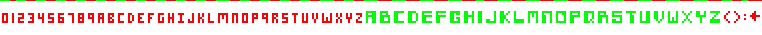

Plasmacore:Fonts
From Plasmaworks
Contents |
Basics
- Plasmacore fonts are drawn from custom bitmap images called font strips.
- Plasmacore comes with a built-in SystemFont singleton you can use to start with. For example:
SystemFont.handle = Handle.center SystemFont.draw( "Hello World", Display.center )
- Type "gogo install font" to download a font-making program that will generate a font strip image out of any OS font. This image should be placed in your images/ folder. Compile once to add the new image to data/image_manifest.txt, then mark it as varfont in the image manifest before loading as Font("font_strip_name.png"). Not doing so will result in the "Cannot load .. as font" error.
Missing Character Font Strips
- If you have a font strip that is variable width, but doesn't contain the full 95 characters that is expected, then you can create that custom font strip in the usual manner. After adding it to the data/image_manifest.txt as a var font you can access the font by creating a Font object with the paramaters:
font = Font("filename.png",FontStyle.proportional,<the characters in the font strip))
Example
In this example we're using a varied version of the Robotron 2084 font.  It's been converted into a font strip, with the colors left as their defaults for readability. As you can see there aren't all the characters so when you instantiate it you will use:
font = Font("robotronFont.png", FontStyle.proportional, "0123456789abcdefghijklmnopqrstuvwxyzABCDEFGHIJKLMNOPQRSTUVWXYZ():<")
Important Nuances
- If you use the default font strip creator then your font strips with always have the characters as white characters. It's important to always remember that if you want to support color masking then you need to always submit a font strip with white characters.
- A bug in the 3.2.5 version requires that you enter your characters in ascending ascii order for both the font strip and the font object being declared.
- Don't put the font strip under the standalone category in the image_manifest.txt, this will cause it to error. Put it under the general category instead.
| Good | Bad |
|---|---|
| [category general]
"robotronFont.png" varfont | [category standalone]
"robotronFont.png" varfont |